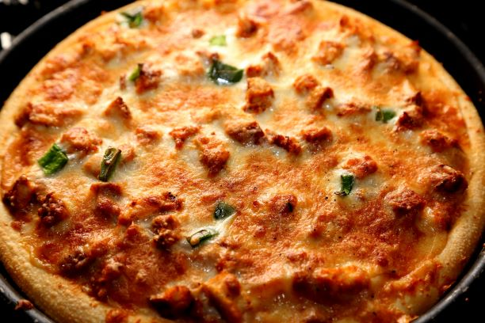
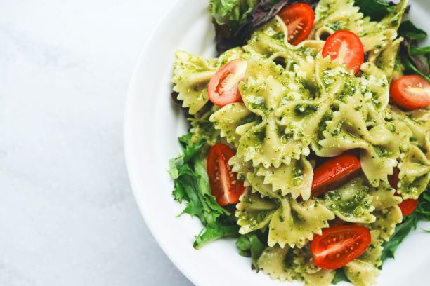
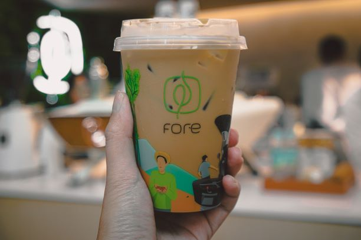

Pizza (Italian: [ˈpittsa], is a savory dish of Italian origin consisting of a usually round, flattened base of leavened wheat-based dough topped with tomatoes, cheese, and often various other ingredients (such as anchovies, mushrooms, onions, olives, pineapple, meat, etc.), which is then baked at a high temperature, traditionally in a wood-fired oven.[1] A small pizza is sometimes called a pizzetta. A person who makes pizza is known as a pizzaiolo. At Hardrock cafe we are seasoned pizzaiolos.

A salad is a dish consisting of mixed pieces of food, with some definitions requiring at least one raw ingredient. It is often dressed, and is typically served at room temperature or chilled, though some can be served warm.
Garden salads use a base of leafy greens such as lettuce, arugula/rocket, kale or spinach; they are common enough that the word salad alone often refers specifically to garden salads. Other types include bean salad, tuna salad, fattoush, Greek salad (vegetable-based, but without leafy greens), and sōmen salad (a noodle-based salad). The sauce used to flavor a salad is generally called a salad dressing; most salad dressings are based on either a mixture of oil and vinegar or a fermented milk product like kefir.
Salads may be served at any point during a meal and at hardrock we rock salads.

Outside of Italy, cappuccino is a coffee drink that today is typically composed of a single espresso shot and hot milk, with the surface topped with foamed milk.The top third of the drink consists of milk foam; this foam can be decorated with artistic drawings made with the same milk, called latte art.At Hardrock Cafe our cuppacinos are to die for.